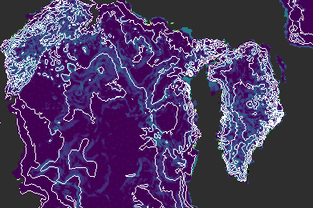
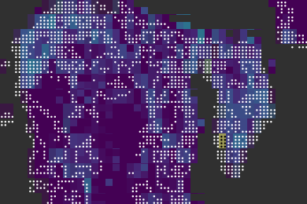
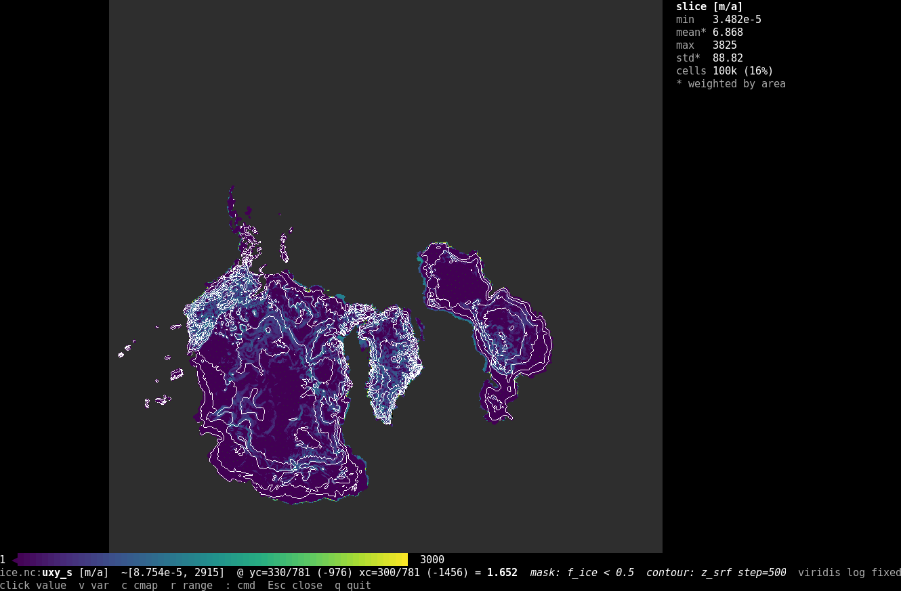

nqv shows the maps and series of NetCDF files, fast: in any terminal over plain ssh, or in a
desktop window that reads the files on the cluster. Step through time, click a cell for its series, mask,
contour, compare two runs; whatever you see can be repeated as one command line or saved as a PNG.
One viewer with two faces. Both have the same keys, : commands and command-line
options; p in either prints the command for the view you have.
Terminal viewer nqv
Runs where the data is: in your ssh session on the login node.
One static binary for Linux (x86-64, ARM) and macOS. Copy it to ~/bin; nothing to load.
Arrows step through time and levels, v picks a variable by a few letters, a click gives a
cell's value and series; statistics at the side.
Full pixels in terminals with an image protocol: kitty, Ghostty, WezTerm, iTerm2, and sixel ones.
Coloured half-blocks everywhere else, including Terminal.app, GNOME Terminal and tmux:

pixels

half-blocks

The terminal viewer in xterm, with sixel graphics
Desktop app
Runs on your laptop (macOS, Linux); reads files there or on a cluster.
Maps at the screen's full resolution, drawn by the graphics card: changing colours or range is
instant.
The wheel zooms around the pointer, a drag pans, a click shows the cell's series below the map; a
toolbar for colour map, range, smoothing and comparison, a list of variables at the side.
Open local files, or albedo0:/path/to/run; or send a view from the cluster with
nqv -g. Each view has a window of its own.
The same view, sent from the cluster with nqv -g
Four ways in
Wherever you start, the data is read where it lies and only screen-sized maps travel: a 100 MB
file opens in seconds over ssh.
You type
Where
Drawn
Data read
nqv run/
ssh session on the cluster
that terminal
on the cluster
nqv -g run/
ssh session on the cluster
the desktop app on your laptop
on the cluster
nqv albedo0:/path/run/
terminal on your laptop
that terminal
on the cluster, by nqv started over ssh
Open… albedo0:/path/run/
the desktop app
its window
on the cluster, by nqv started over ssh
nqv -g reaches the app through a socket that ssh forwards: one line in
~/.ssh/config on your laptop, which nqv -g prints for you
(details). Without it, or
without the app running, it draws in the terminal.
Everything on the command line
Every setting is a flag and a : command, and p prints the command line of the
view you have. --png writes the view to a file without opening anything, for scripts and
notebooks:
nqv is not notarized by Apple yet, so macOS blocks it the first time. Drag it to Applications and open
it; then open System Settings → Privacy & Security and click Open Anyway. Or, in Terminal:
Files on a cluster need ssh to log in without a prompt (a key in ssh-agent) and nqv there, of
the same version as on your laptop. The desktop app updates itself when you ask. All versions are on the
releases page; to build it yourself, see the
README.